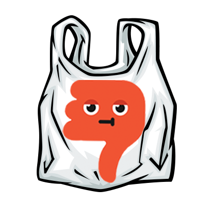
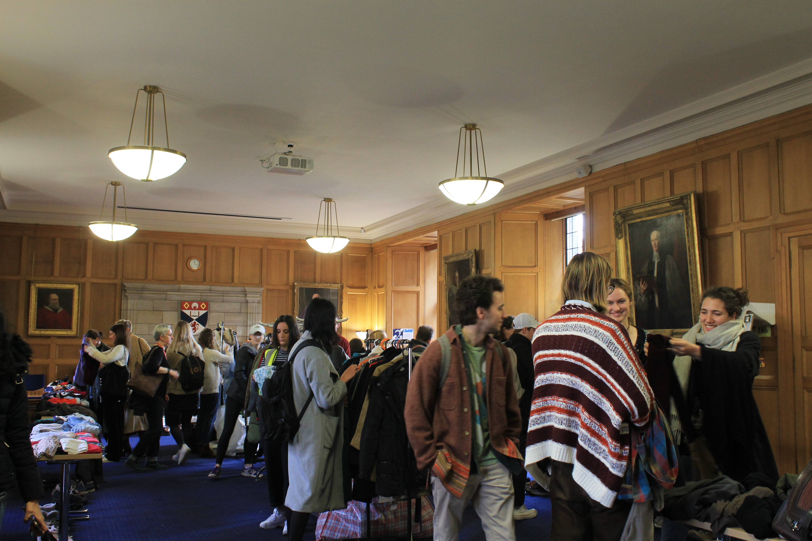
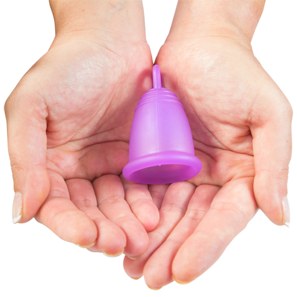
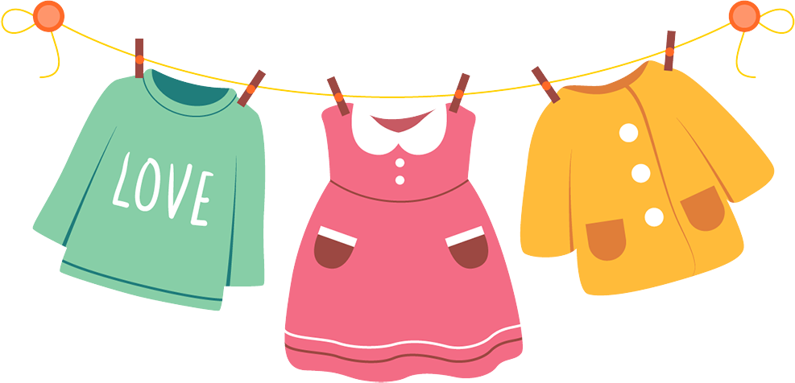

Waste Reduction
- 
-

(information about waste in UK)
(information about waste in UK)
Zero Waste organises regular beach clean-ups and other waste awareness programs. Tag along to teh next beack clean-up!
As a lot of water and waste goes into producing clothes, Sustainable Style aims to reduce waste through fighting fast fashion by hosting clothing swaps. Check out their Facebook to see when the next one is!
This Transition intiative hosts regular giveaways to prevent waste, keeping the circular econom going! Check out their Facebook to see when their next one is and get some free new stuff
Although there are many ways to recycle and reuce to prevent waste, the most important thing you can do is reduce your consumption.

Using a menstrual is an easy and cost-effective way to reduce garbage, as they last 8 years. Using menstrual cups effectively preventing the waste of 9600 feminine hygiene products over a woman's lifetime.
Buying second hand clothing is a great way to limit the waste produced by the fashion industry. It takes around 1800 tons of water to produce 1 pair of jeans, so buying second hand clothing greatly reduces waste!
